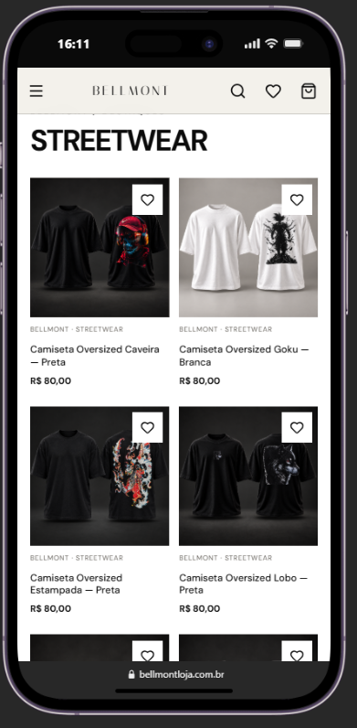
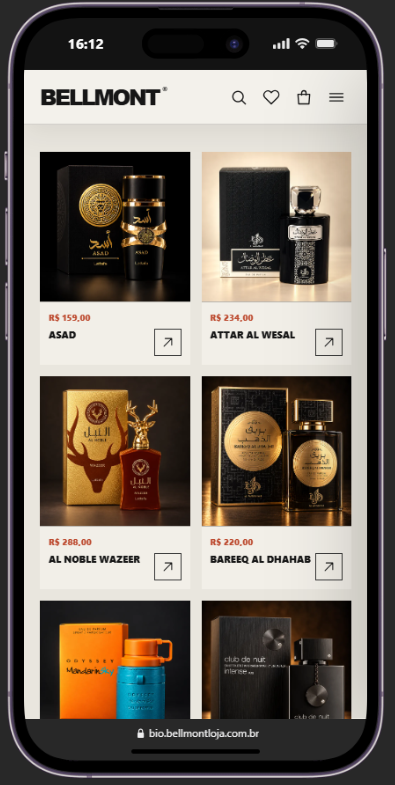

Identidade
Uma direção visual forte para comunicar streetwear premium, moda fitness e perfumaria na mesma plataforma.
E-commerce full stack para streetwear, moda fitness e perfumaria. Catálogo dinâmico de 47 produtos, páginas individuais, variantes, filtros, favoritos, Quick View, sacola e integração comercial com WhatsApp.
Uma direção visual forte para comunicar streetwear premium, moda fitness e perfumaria na mesma plataforma.
Modelagem relacional e catálogo de 47 produtos para tornar a navegação entre peças, perfumaria e novidades mais direta.
Experiência de catálogo pensada para leitura, toque e descoberta em telas menores, com deploy em produção e HTTPS.

A primeira dobra une campanha, categorias e chamadas para coleção, sustentando a presença visual da marca.

O catálogo mobile apresenta peças em uma grade objetiva, com imagem, nome, preço e atalhos para salvar favoritos.

A navegação também comporta a perfumaria, mantendo a mesma estrutura de descoberta e apresentação de produto.
Quer criar uma loja digital que represente sua marca?
Entrar em contato